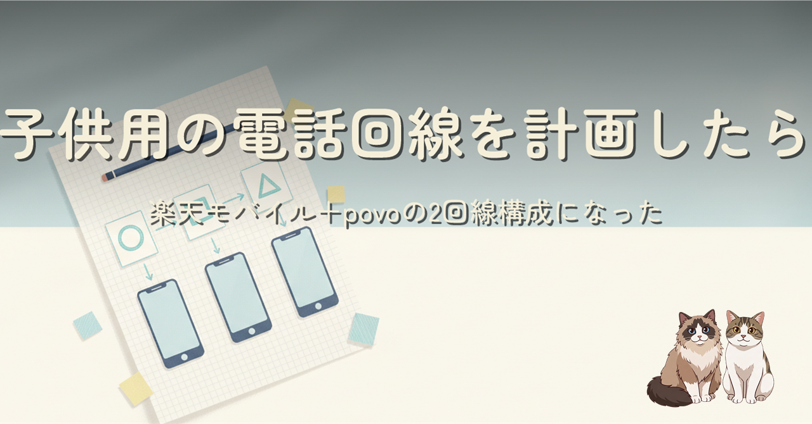
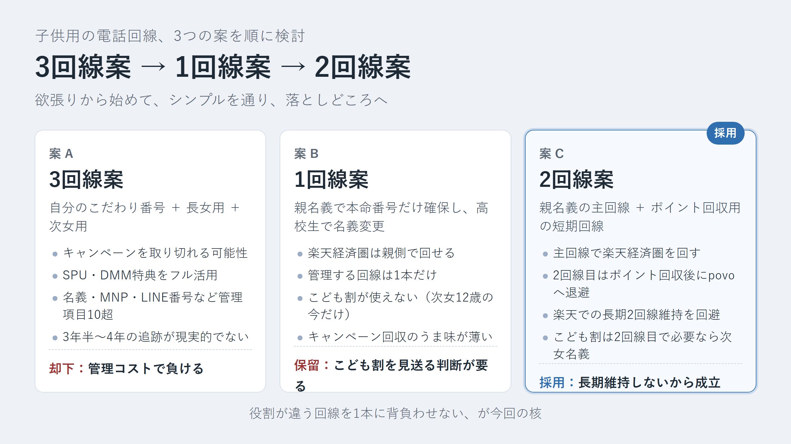
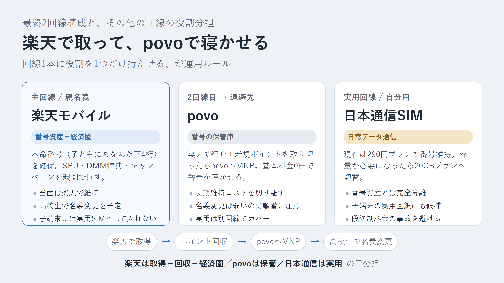
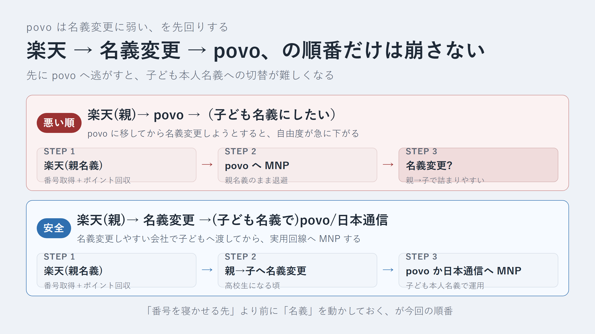
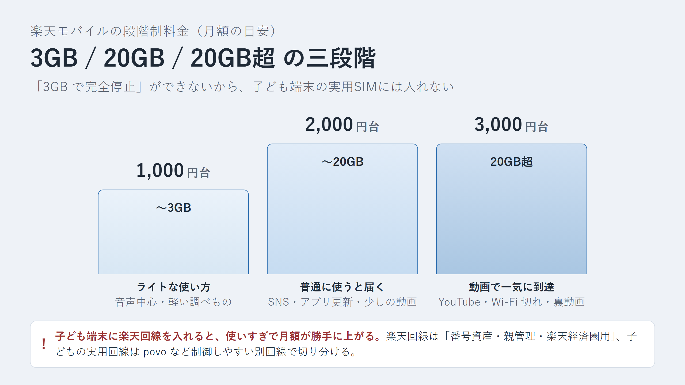
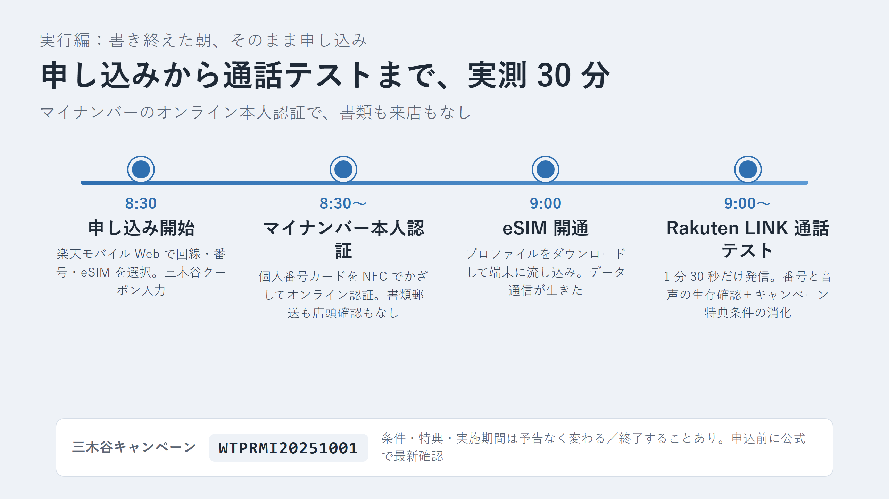

楽天モバイルの「選べる電話番号サービス」で子どもの誕生日にちなんだ番号を 5 分だけ検索してみたら、あっさり候補が並びました。そこから話が膨らみすぎて、楽天モバイル・povo・日本通信SIM・楽天経済圏・最強こども割・名義変更・LINE の電話番号変更まで全部つながっていることに気づきます。3 回線案・1 回線案・2 回線案と方針を動かしながら、最終的に「楽天で取って povo で寝かせる」2 回線構成に落ち着くまでの意思決定を辿った記事です。書き終えた朝、そのまま 1 回線目の申し込みまで完了させています。
「回線 1 本に役割を 1 つだけ持たせる」がこの記事の核です。楽天経済圏を回す主回線・番号資産を確保する回線・実用データ回線を、1 本のスマホ契約で兼務させると意思決定が破綻します。だから 2 回線構成にしつつ、2 回線目は楽天で長期維持せず「ポイントを取り切ったら povo に逃がす」と役割を切ります。名義変更と povo の相性が悪いので、「楽天 → 名義変更 → povo」の順番だけは崩さない、という運用ルールもあわせてまとめています。




